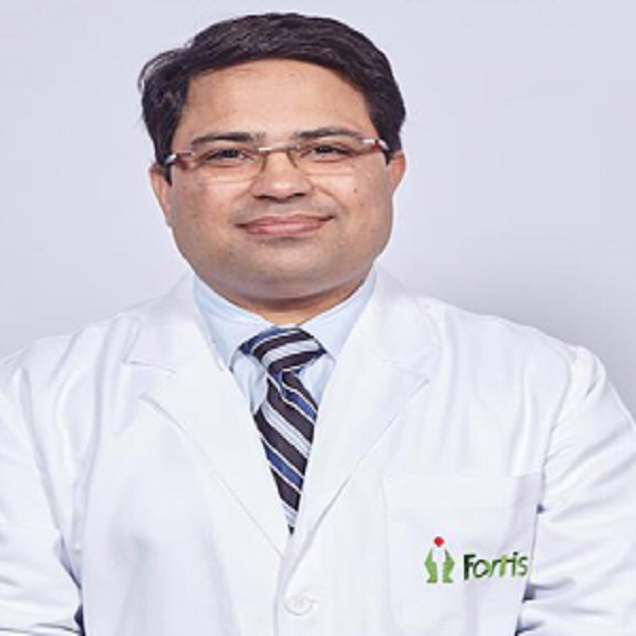

الدكتور فيفيك فيج
يُعتبر الدكتور فيفيك فيج جراحًا رائدًا في مجال زراعة الكبد، ويُنسب إليه الفضل في تطوير جراحة التبرع بالأعضاء من الأحياء وتوحيد بروتوكولات السلامة لتحقيق أعلى مستوى من سلامة المتبرعين منذ بدايتها في البلاد.
Liver Transplant & Hepato
الدكتور أفنيش
الدكتور أفنيش سيث هو رئيس قسم أمراض الجهاز الهضمي والكبد في مستشفى مانيبال، دواركا، نيودلهي، ورئيس قسم تبادل الأعضاء وزراعتها في مانيبال (MOST).
Gastroenterology & Hepatology
الدكتور هيتيش-غارغ
الدكتور هيتيش جارج هو رئيس وحدة جراحة العظام والعمود الفقري في مستشفى أرتيميس، جورجاون، الهند. لديه خبرة واسعة تزيد عن 15 عامًا في جراحة العمود الفقري، وقد عمل في العديد من المعاهد المرموقة حول العالم مثل جامعة ييل (الولايات المتحدة الأمريكية)، ومستشفى شراينرز للأطفال، فيلادلفيا (الولايات المتحدة الأمريكية).
Orthopaedic Surgery
الدكتور فيكروم شارما
الدكتور فيكرام شارما، الحاصل على ماجستير في الجراحة العامة ودبلوم في جراحة المسالك البولية من معهد جراحة المسالك البولية في لندن، هو أحد أبرز الرواد والمبتكرين في مجال جراحة المسالك البولية في الهند ولديه 36 عامًا من الخبرة السريرية.
Robotic Urological Surgery
الدكتور آي بي إس أوبيروي
هو خبير في جراحة استبدال المفاصل الأولية والتصحيحية للركبة والورك والكتف والمرفق والكاحل. وهو من أوائل الجراحين، ومن بين القلائل، الذين بدأوا الجراحة الترميمية طفيفة التوغل، وهي جراحة المنظار (التنظير المفصلي)، لعلاج مشاكل الكتف والمرفق والورك والكاحل.
Neurosurgery